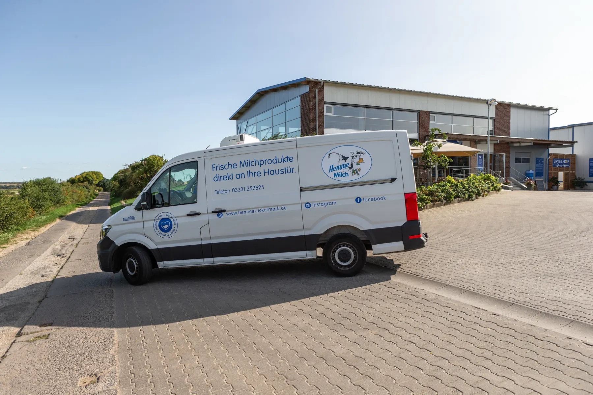

- Startseite
- Für Gastro & Handel
Milchmann-Service
Frische Milch für Theke und Regal
Hemme beliefert Regionalläden, Restaurants, Hotels, Kantinen und Schulen in Berlin und Brandenburg und ist im Lebensmittelhandel gelistet. Bestellung, Tourenplanung und Auslieferung machen wir selbst.


Auf einen Blick
Hemme Milch beliefert Gastronomie, Großverbraucher und Handel in Berlin und Brandenburg mit eigenem Milchmann-Service. Für die Gastronomie gibt es Großgebinde, zum Beispiel 10 Liter frische Milch und 12 Kilogramm Fassbutter. Im Lebensmittelhandel ist Hemme bei EDEKA, REWE, Penny, Netto und Kaufland gelistet.
- frische Milch im Gebinde
- 10 Liter
- Fassbutter im Block
- 12 kg
- Bestellung bis Auslieferung
- Eigene Touren
- Handelsketten in der Region
- 5
Der Milchmann-Service
Mit unserem Milchmann-Service liefern wir frische Milchprodukte direkt an Läden, Cafés, Bäckereien und Eisdielen. In Brandenburg ist dieser Direktservice einmalig.
- Eigene Bestellannahme, eigene Tourenplanung, eigene Auslieferung
- Frisch aus der eigenen Molkerei, ohne Zwischenhändler
- Für Regionalläden, Gastronomie, Hotels, Kantinen und Schulen

Großgebinde für die Gastronomie
Frische Milch
Vollmilch und teilentrahmte Milch. Für Kaffeespezialitäten in Cafés und Gastronomie. Restlaufzeit 10 Tage.
1 Liter, 10 Stück pro Karton10 LiterFassbutter
Aus natürlich gesäuertem Rahm, mit vollsahnigem Aroma. Ideal für Gebäck. Restlaufzeit 14 Tage.
200 g, 6 pro Tray12 kgMilchgetränke
Vanille, Schoko, Erdbeere und Eiskaffee von April bis September. Mindestens 92 Prozent frische Vollmilch.
600 ml, 6 pro Tray230 ml to go, 8 pro Karton
Der 230-ml-Becher ist der schnelle Genuss für unterwegs und bringt Zusatzabsatz im Kühlregal. Der 600-ml-Beutel ist eine praktische Größe zum Weiterverarbeiten, die Fassbutter im 12-Kilogramm-Block ist für Bäckereien und Gastronomie gedacht.
Für den Handel
Hemme ist bei EDEKA, REWE, Penny, Netto und Kaufland gelistet, dazu in vielen regionalen Läden in Berlin und Brandenburg. Im Mai 2025 war eine Delegation der REWE-Region Ost zu Gast und hat sich die ganze Kette angesehen: die Aufzucht der Futterpflanzen, die Haltung der Milchkühe, die schonende Verarbeitung und die Qualitätssicherung bis zum fertigen Produkt.
Vom ersten Saatkorn bis zum Endprodukt im Kühlregal bieten wir vollständige Transparenz.
Fragen von Gastro und Handel
Was ist der Milchmann-Service?
Hemme liefert frische Milchprodukte selbst direkt an Läden, Cafés, Bäckereien und Eisdielen. Bestellannahme, Tourenplanung und Auslieferung liegen in eigener Hand. In Brandenburg ist dieser Direktservice einmalig.
Welche Großgebinde gibt es?
Frische Milch im 10-Liter-Gebinde, Fassbutter im 12-Kilogramm-Block und Milchgetränke im 600-ml-Beutel, sechs Stück pro Tray.
Wen beliefert Hemme?
Regionalläden in Brandenburg und Berlin, Restaurants, Hotels, Kantinen und Schulen, dazu Supermärkte der Region und Discounter.
Wie lange sind die Produkte haltbar?
Frische Milch 10 Tage, Schokomilch 12 Tage, Vanillemilch, Eiskaffee, Joghurt, Fassbutter und Buttermilch 14 Tage.
Lasst uns sprechen
Anfrage für Gastro & Handel
Ruft uns an unter 03331 252525 oder schreibt uns über das Kontaktformular.